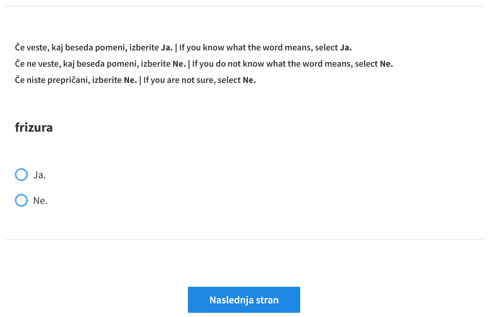
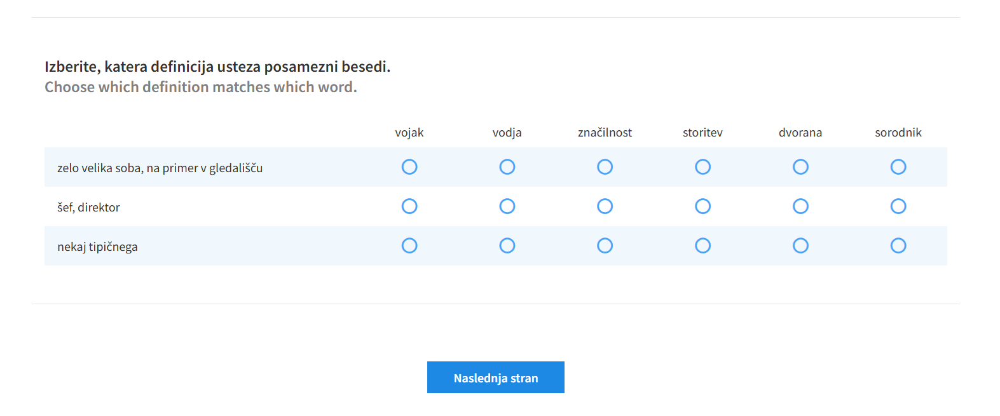
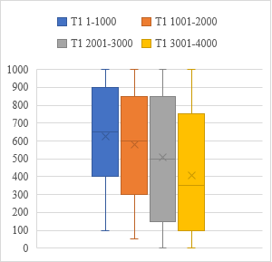
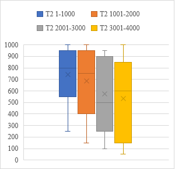
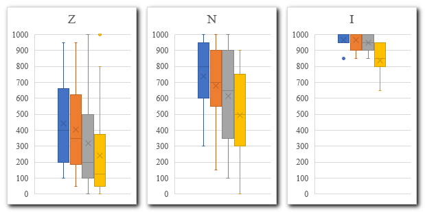
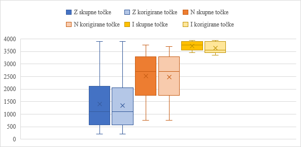
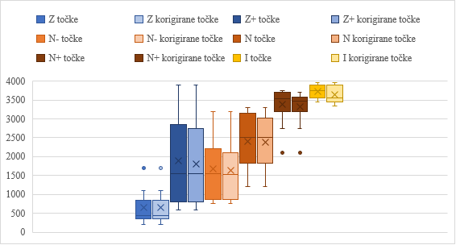
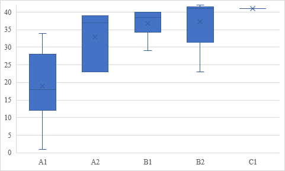

1Članek predstavlja dva testa besedišča – da/ne test in pilotni test besedišča po frekvenčnih razredih, s katerima smo med govorci slovenščine kot drugega in tujega jezika preverjali poznavanje pogostih splošnih besed v slovenščini. Povzete so ugotovitve prve izvedbe da/ne testa na Mladinski poletni šoli slovenščine 2022, članek pa se osredotoča na drugo izvedbo med odraslimi tečajniki Centra za slovenščino kot drugi in tuji jezik (Filozofska fakulteta Univerze v Ljubljani) leta 2024. Cilj je bil preveriti, ali lahko da/ne test učinkovito razvršča govorce slovenščine kot drugega in tujega jezika glede na njihovo jezikovno znanje, in ugotoviti njegovo zanesljivost. Rezultati kažejo, da govorci slovenščine kot drugega in tujega jezika v večji meri poznajo bolj pogoste besede kot manj pogoste in da se poznavanje besedišča razlikuje glede na raven jezikovnega znanja. Z da/ne testom lahko dobro ločimo med govorci, ki so v slovenščini začetniki, nadaljevalci ali izpopolnjevalci, tistih, ki so na prehodu med temi ravnmi, pa s tem testom ne moremo zanesljivo uvrstiti. Rezultati so pokazali tudi, da so govorci slovanskih jezikov pri nižjih ravneh znanja dosegli boljše rezultate kot govorci neslovanskih jezikov. Pilotni test besedišča po frekvenčnih razredih potrjuje veljavnost da/ne testa, saj se njuni rezultati močno ujemajo.
2Ključne besede: besedišče, da/ne test, test besedišča po frekvenčnih razredih, slovenščina kot drugi in tuji jezik
1The article presents two vocabulary tests – a yes/no test and a pilot vocabulary levels test – used to evaluate the knowledge of frequently used common words in Slovenian among speakers of Slovenian as a second and foreign language. It summarises the findings from the first administration of the yes/no test at the 2022 Youth Summer School of Slovenian and focuses on the second administration involving adult learners at the Centre for Slovene as a Second and Foreign Language (Faculty of Arts, University of Ljubljana), in 2024. The study aimed to determine whether the yes/no test reliably classifies speakers of Slovenian as a second and foreign language according to their language proficiency and to assess its reliability. The results show that speakers of Slovenian as a second and foreign language are more familiar with high-frequency words than with low-frequency ones, and that vocabulary knowledge varies in relation to proficiency level. The yes/no test successfully differentiates between beginner, intermediate, and advanced learners of Slovenian, although it is less dependable when classifying speakers transitioning between these levels. The results also reveal that speakers of Slavic languages perform better than non-Slavic speakers at lower proficiency levels. The pilot vocabulary levels test supports the validity of the yes/no test, as the results of both tests show a strong correlation.
2Keywords: vocabulary, yes/no test, vocabulary levels test, Slovenian as a second and foreign language
1Prispevek predstavlja dva testa besedišča, po tujih zgledih razvita za slovenščino, in sicer t. i. da/ne test in pilotni test besedišča po frekvenčnih razredih, s katerima smo med govorci slovenščine kot drugega in tujega jezika (SDTJ) preverjali poznavanje pogostih splošnih besed v slovenščini. Ker je bila prva uporaba da/ne testa med udeleženci Mladinske poletne šole (MPŠ) 2022 že podrobneje predstavljena v zborniku konference Jezikovne tehnologije in digitalna humanistika,1 so v pričujočem prispevku rezultati in ugotovitve te izvedbe le povzeti. Osredotočamo pa se na drugo izvedbo testa, ki je bila v dveh ponovitvah izvedena med udeleženci tečajev za odrasle, ki so se slovenščino učili na Centru za slovenščino kot drugi in tuji jezik2 (CSDTJ, Filozofska fakulteta Univerze v Ljubljani) v spomladanskem semestru leta 2024.
2Podobno kot Read3 smo se spraševali o dveh vidikih testa: o njegovi uporabnosti za razvrščanje tečajnikov v skupine, homogene po jezikovnem znanju, in kaj tak test pove o poznavanju besedišča. Razvijalci testa za angleščino so ugotovili, da je mogoče z da/ne testom dobro napovedati, kako učeče se uvrstiti v ustrezne skupine. 4 Enako se je ob prvi izvedbi da/ne testa za slovenščino med udeleženci MPŠ 5 pokazalo, da je mogoče na podlagi njegovih rezultatov udeležence razvrstiti po jezikovnem znanju. Pričujoči prispevek v primerjavi s prej omenjenim prinaša nove podatke in ugotovitve, pridobljene na testiranju z da/ne testom pri drugačni publiki, ki je starostno in jezikovno bolj raznolika. V testiranje so bili vključeni tudi popolni začetniki, prav tako pa smo ugotavljali, kako test rešujejo govorci slovenščini sorodnih jezikov. Prispevek predstavlja tudi nov test poznavanja splošnega besedišča, s katerim smo želeli preveriti zanesljivost odgovorov pri da/ne testu. Ob drugi izvedbi da/ne testa je bil za slovenščino namreč prvič preizkušen tudi test besedišča po frekvenčnih razredih, pripravljen po vzoru Nationovega testa Vocabulary Levels Test. 6
3Prispevek najprej predstavi zglede za pripravo obeh testov in postopek njune prilagoditve za slovenščino. V nadaljevanju so predstavljeni hipoteze, potek testiranja in rezultati. Ugotovitve so komentirane v naslednjem poglavju, prispevek pa se sklene z razmislekom o informativnosti tovrstnega testiranja in omejitvah raziskave.
1Pri da/ne testu (angl. yes/no test) se testirani za besede v tujem jeziku, ki so jim predstavljene brez konteksta, odločajo, ali jih poznajo ali ne. Tak test je mogoče enostavno izvesti, zlasti če je pripravljen v digitalni obliki, in tudi hitro rešiti. Neposredna zgleda za pripravo da/ne testa za slovenščino sta bila test V_YesNo 7 za angleščino in test obsega slovarja za grščino, kot sta ga pripravila Milton in Alexiou.8 Oba izhajata iz testov, ki jih je Meara s sodelavci razvil kot alternativo klasičnim uvrstitvenim testom na tečajih angleščine.9
2V_YesNo je digitalni test,10 ki preverja poznavanje 10.000 najpogostejših besed v angleščini. Test obsega 100 v angleščini obstoječih besed (po 10 besed za vsakih 1000) in 100 v angleščini neobstoječih besed (nebesed), kar naj bi preprečevalo goljufanje oziroma kaznovalo ugibanje. Testiranemu se besede in nebesede prikazujejo posamično, ob koncu testa pa se izpiše rezultat, ki je ocena, koliko besed testirani pozna. Doseči je mogoče največ 10.000 točk. Če testirani označi, da pozna nebesedo, se njegov končni rezultat zniža, odbitek točk pa je odvisen od tega, kako testirani odgovarja na vprašanja s pravimi besedami. Testirani, ki pravilno prepoznajo večino pravih besed, so za posamezno napačno prepoznavo nebesede kaznovani blažje, medtem ko so tisti, ki pravilno prepoznajo le nekaj pravih besed, za napačno prepoznavo nebesed kaznovani strožje. 11
3Da/ne test, s katerim sta Milton in Alexiou želela oceniti obseg besedišča pri učencih grščine, je podoben testu V_YesNo. Besede zajema izmed prvih 5000 najpogostejših lem v grškem nacionalnem korpusu (Hellenic National Corpus), in sicer po 20 za vsakih 1000 besed, skupaj 100, tem pa je dodanih še 20 v grščini neobstoječih besed. Besede so testiranemu na papirju predstavljene v seznamu, brez besedilnega konteksta, odločiti pa se mora, ali jo »pozna ali zna uporabiti«. 12 Če testirani označi, da obstoječo besedo pozna, se njegov odgovor točkuje s 50 točkami, najvišje število točk je 5000. Če pa testirani označi, da pozna nebesedo, se od končnega rezultata za vsak tak odgovor odšteje 250 točk, izgubi lahko torej največ 5000 točk. Končno število točk naj bi predstavljalo oceno, kolikšen je obseg besedišča pri testiranem.
1Pri pripravi da/ne testa za slovenščino smo sledili načelom omenjenih testov. Besede so bile zajete iz Referenčnega seznama pogostih splošnih besed za slovenščino. 13 V tem seznamu, ki je nastal s prekrivanjem najpogostejših lem iz štirih slovenskih besedilnih korpusov (Kres, GOS, Janes, Šolar 2.0), je zbranih 4768 pogostih splošnih lem.14 Za pripravo testa je bilo upoštevanih prvih 4000 lem, saj zadnja tisočica lem v seznamu ni popolna. V želji po kar najbolj enakomernem izboru je bila izmed vsakih zaporednih 50 lem naključno izbrana ena. Za vsakih zaporednih 1000 lem je bilo naključno izbranih 20 lem, skupaj 80. Pri preverjanju izbora so bile leme, ki lahko pripadajo različnim besednim vrstam (npr. raven, ki je lahko samostalnik ali pridevnik), nadomeščene z drugimi iz istega frekvenčnega razreda. Pri izboru se nismo omejevali, temveč smo vključili tudi besedne vrste, ki v nekaterih testih besedišča niso prisotne (npr. veznik kajti, prislovi tako, večinoma in podobno, ki so v izboru za prvih 1000 najpogostejših splošnih besed). Poleg izbranih besed so bile v test vključene tudi v slovenščini neobstoječe besede (npr. posminati, čembrita, izpontivanje, deptanjski), ki delujejo kot slovenske in bi lahko pripadale različnim besednim vrstam. Pri oblikovanju nebesed smo upoštevali strukturo slovenskega zloga, vanje smo vključili tipična obrazila in končnice. Razmerje med besedami in nebesedami je bilo enako kot v testu, ki sta ga zasnovala Milton in Alexiou – 5 : 1. Z izbranimi 80 obstoječimi besedami in 16 nebesedami test vsebuje 96 vprašanj, v katerih so besede zapisane v osnovni obliki.
1Zaradi enostavnejše izvedbe testiranja, zbiranja in analize odgovorov smo se odločili za digitalno obliko testa. Pri prvi izvedbi testa med udeleženci MPŠ je bilo uporabljeno orodje Socrative, ki ni omogočalo zbiranja dodatnih podatkov, zato je bila pri drugi izvedbi izbrana platforma 1ka. 15
2Test je sestavljal uvodni nagovor, ki je testiranim pojasnil namen testiranja, sledilo je vprašanje o strinjanju z zbiranjem osebnih podatkov, ki so bili potrebni za identifikacijo oseb, sodelujočih v dveh ponovitvah testa, zatem se je testiranim pokazalo navodilo za reševanje testa: kako bodo vprašanja strukturirana, kdaj naj izberejo gumb Ja in kdaj Ne. V navodilu so bili testiranci opozorjeni, da bodo videli v slovenščini neobstoječe besede, naj ne ugibajo in ne uporabljajo pomoči. Sledilo je 96 vprašanj, pri vsakem se je testiranemu prikazalo enako navodilo (Slika 1). 16 Vsi nagovori, navodila in vprašanja so bili napisani v slovenščini in angleščini.

3Zaradi omejitev orodja 1ka vprašanj ni bilo mogoče prikazovati popolnoma naključno. Določena mera naključnosti je bila dosežena z uporabo treh različnih razporeditev vprašanj, pri čemer so bile besede iz različnih frekvenčnih razredov pomešane med seboj, kot v zvezi z motivacijo za reševanje pri enem od testov besedišča priporoča Nation. 17 Pri tem smo upoštevali, 1) da se test začne in konča z v slovenščini obstoječo besedo, 2) da so besede iz različnih frekvenčnih razredov razporejene po celotnem testu, 3) da se zaporedno ne pojavita besedi iz istega frekvenčnega razreda in 4) da sta med dvema nebesedama vedno vsaj dve obstoječi besedi. Testiranemu se je naključno prikazala ena od treh razporeditev vprašanj.
1Pri da/ne testu je bilo za vsak odgovor Ja pri obstoječih besedah pripisanih 50 točk. Vsaka lema v da/ne testu namreč predstavlja 50 lem, in če testirani odgovori, da jo pozna, predvidevamo, da pozna tudi preostale v njeni frekvenčni okolici.18 Vsak odgovor, da testirani besede ne pozna (Ne), je dobil 0 točk. Vsaka napačna prepoznava nebesede je bila kaznovana z –250 točkami. Testirani je lahko torej s pravilnimi odgovori zbral največ 4000 točk, z napačno prepoznavo nebesed pa jih je lahko enako število izgubil.
2Izračunano je bilo skupno število točk za vsakih tisoč besed oziroma vsak frekvenčni razred, skupno število točk za prave besede (v nadaljevanju skupno število točk), skupno število točk za nebesede in skupno korigirano število točk (od točk za obstoječe besede so bile odštete točke za nebesede, ki so bile prepoznane kot obstoječe besede; v nadaljevanju korigirane točke). Morebitni manjkajoči odgovori niso bili upoštevani, zanje točke niso bile prištete ali odštete.
1Pri pripravi testa receptivnega besedišča, torej besedišča, ki ga govorci SDTJ prepoznajo in razumejo, ne znajo pa ga nujno tudi uporabljati,19 smo izhajali iz testa Vocabulary Levels Test (VLT), ki ga je za angleščino kot tuji jezik razvil Nation, 20 kasneje pa so ga dopolnjevali in posodabljali. 21 Gre za test, s katerim se preverja poznavanje receptivnega besedišča, in sicer samostalnikov, glagolov in pridevnikov iz različnih frekvenčnih razredov. Prve različice VLT22 preverjajo poznavanje besed izmed najpogostejših 2000, 3000, 5000 in 10.000 besednih družin v angleščini in posebej iz nabora akademskega besedišča; verzija, ki jo je pripravil Webb s sodelavci,23 pa izmed 1000, 2000, 3000, 4000 in 5000 besednih družin.
2Vsako vprašanje sestavlja šest besed v osnovni obliki in tri definicije, testirani pa mora povezati besedo in ustrezno definicijo. V prvotni različici24 je bilo za vsak frekvenčni razred šest vprašanj, torej 18 testiranih besed in 18 besed, ki so bile distraktorji. V različicah, ki so jih pripravili Schmitt s sodelavci25 in Webb s sodelavci, 26 pa je bilo po deset vprašanj. VLT je bil zamišljen kot diagnostično orodje, ki naj bi testiranega usmerjalo, katero besedišče naj se uči – besedišče tistega frekvenčnega razreda, pri katerem je dosegel slabši rezultat, 27 uporablja pa se tudi za oceno obsega slovarja govorcev angleščine kot tujega jezika.28
1Za testiranje je bila pripravljena slovenska različica VLT, v tem besedilu imenovana pilotni test besedišča po frekvenčnih razredih oziroma piTeBeFRa. Namen ni bil, kot pri VLT, oceniti, koliko besed testirani poznajo v posameznem frekvenčnem razredu, temveč smo želeli preveriti skladnost odgovorov testiranih v da/ne testu in piTeBeFRa. Zato ni bil pripravljen »popoln« test, ki bi zajemal enako število besed iz posameznih frekvenčnih razredov, temveč so bile vanj vključene le besede, že prisotne v da/ne testu. Ker smo izhajali iz seznama pogostih splošnih besed za slovenščino, 29 je bila kot enota uporabljena lema in ne besedna družina 30 kot v prej omenjenih različicah VLT.
2Izmed 80 slovenskih besed, vključenih v da/ne test, je bilo za piTeBeFRa izbranih 42 besed: 30 samostalnikov, devet glagolov in trije pridevniki. 31 Vsako vprašanje je vsebovalo tri besede iste besedne vrste iz istega frekvenčnega razreda (npr. vodja, značilnost, dvorana) ter tri distraktorje, ki so bili prav tako besede iste besedne vrste in se v Referenčnem seznamu pogostih splošnih besed pojavljajo do deset mest višje ali nižje ob posamezni besedi (npr. vojak,storitev,sorodnik), torej s podobno pogostostjo kot testirane besede. Pri izbiri besed smo upoštevali, da so bile pomensko dovolj različne, da so lahko testirani izbrali ustrezne odgovore.32 Za testirane besede so bile oblikovane definicije. V čim večji meri smo se želeli izogniti temu, da bi piTeBeFRa preverjal tudi razumevanje definicij, zato smo jih pripravili tako, da so bile 1) čim krajše, da testiranim ni bilo treba veliko brati; 2) kadar je bilo mogoče, sestavljene iz besed na ravni A1 33 (npr. črn – temne barve) ali iz transparentnih besed (npr. obzorje – horizont);34 3) oblikovane tako, da so se izogibale uporabi besede z istim korenom (npr. bolnik – oseba, ki je bolna – oseba, ki ni zdrava), kar bi lahko omogočalo večje ugibanje pri odgovarjanju.35 Definicije so razlagale pomen, naveden kot prvi v Slovarju slovenskega knjižnega jezika, pri čemer pa tega pomena niso nujno opisovale v celoti ali natančno (npr. frizura – lasje). Skupno je bilo pripravljenih 14 vprašanj: po tri za frekvenčna razreda 0–1000 in 3001–4000 ter po štiri za frekvenčna razreda 1001–2000 in 2001–3000.
1Test je bil prav tako naložen v orodje 1ka in izveden skupaj z drugo ponovitvijo da/ne testa. Ker je PiTeBeFRa sledil da/ne testu, se uvodne informacije niso ponavljale, temveč se je testiranim prikazala stran z navodilom za reševanje testa, ki je pojasnjevalo strukturo vprašanj in vključevalo grafični primer rešenega vprašanja. Testirane smo prosili, naj ne uporabljajo pomoči. Sledilo je 14 vprašanj, pri vsakem se je testiranemu prikazalo enako navodilo. Vsi nagovori, navodila in vprašanja so bili v slovenščini in angleščini.
2V starejših različicah VLT so bila vprašanja oblikovana tako, da so bile besede in definicije postavljene v dva stolpca: v levem je bilo naštetih šest besed, v desnem pa tri definicije. Webb in sodelavci so obliko vprašanj spremenili, »da bi bila za testirane preglednejša«. 36 Vprašanja so oblikovali tabelarno: besede so prikazali v prvi vrstici, definicije pa navpično v prvem stolpcu. Njihovi postavitvi smo sledili tudi pri pripravi piTeBeFRa (Slika 2). Vprašanja v tem testu se niso prikazovala naključno, temveč glede na frekvenčne razrede od najbolj do manj frekventnih besed.

1Pri piTeBeFRa je bila testiranemu za vsako ustrezno povezano besedo in definicijo dodeljena ena točka, nato pa je bilo izračunano število doseženih točk. Pri napačnih odgovorih se točke niso odštevale, manjkajoči odgovori niso bili upoštevani.
1Ta razdelek povzema ugotovitve o izvedbi da/ne testa med udeleženci MPŠ leta 2022, ki so že bile obširneje predstavljene.37 Testiranje z da/ne testom je bilo izvedeno dvakrat: 5. julija 2022 (T1-MPŠ) in 15. julija 2022 (T2-MPŠ), prvi in zadnji dan pouka. V testiranje so bili vključeni učeči se, stari od 13 do 18 let, z različnim jezikovnim znanjem. Bili so začetniki, nadaljevalci in izpopolnjevalci, ki so bili na podlagi »klasičnega« uvrstitvenega testa razvrščeni v skupine od tri do devet. V testiranje niso bili vključeni popolni začetniki v slovenščini.
2Rezultati so pokazali, da so testirani v večji meri poznali frekventnejše besede in za vsakih naslednjih tisoč dosegli nekoliko nižji rezultat (Tabela 1). Pri obeh testiranjih se je pokazal padajoči profil poznavanja besedišča, ki se je začel stopničasto spuščati pri poznavanju tretje in četrte tisočice besed. Analize so potrdile, da razlika med prvima dvema frekvenčnima razredoma ni bila statistično značilna ( pbonferroni = 1,0 pri T1-MPŠ oziroma pbonferroni = 0,8 pri T2-MPŠ), vse druge razlike pa so bile statistično značilne (pbonferroni < 0,05).
| Testiranje | Frekvenčni razred | N | M | Mdn | SD |
| T1-MPŠ | 1–1000 | 48 | 794 | 850 | 189 |
| 1001–2000 | 48 | 789 | 850 | 221 | |
| 2001–3000 | 48 | 728 | 750 | 234 | |
| 3001–4000 | 48 | 646 | 650 | 206 | |
| T2-MPŠ | 1–1000 | 44 | 842 | 875 | 166 |
| 1001–2000 | 44 | 816 | 900 | 225 | |
| 2001–3000 | 44 | 738 | 800 | 248 | |
| 3001–4000 | 44 | 684 | 700 | 252 |
3Po pričakovanjih so se pri T1-MPŠ skupine z različnim jezikovnim znanjem med seboj statistično značilno razlikovale v doseženem rezultatu ( p < 0,001): začetniki so dosegli nižji rezultat kot nadaljevalci, ti pa nižjega kot izpopolnjevalci. Rezultati da/ne testa pri T1-MPŠ so bili močno povezani z rezultati uvrstitvenega testa (za skupne točke:r = 0,78, p < 0,001; za korigirane točker = 0,78, p < 0,001). Tudi povezanost med rezultatom da/ne testa pri T1-MPŠ in tem, v katero od skupin (od 3 do 9) so bili testirani uvrščeni, se je izkazala za visoko (za skupne točke:r = 0,737, p < 0,001; za korigirane točke: r = 0,732, p < 0,001) in je bila le nekoliko nižja kot povezanost med številom točk na uvrstitvenem testu in razvrstitvijo v skupino (r = 0,842, p < 0,001). S tem se je izkazalo, da bi udeležence MPŠ lahko podobno ustrezno kot z uvrstitvenim testom razvrstili v skupine, homogene po jezikovnem znanju, le na podlagi rezultatov da/ne testa.
4Primerjava odgovorov vseh 25 udeležencev MPŠ, ki so sodelovali v obeh testiranjih, je pokazala rahlo izboljšanje poznavanja v slovenščini obstoječih besed (M = 3108 : 3296, Mdn = 3450 : 3750), pri prepoznavanju nebesed pa so dosegli malenkost slabši rezultat (M = –320 : –440, Mdn = 0 : –250). T-test je za te testirane pokazal statistično značilne razlike med prvim in drugim testiranjem pri skupnih točkah ter rezultati za prvih, drugih in četrtih tisoč besed (p < 0,05), ne pa za korigirane točke (p = 0,565) in za tretjih tisoč besed (p = 0,108).
5Domneva, da bo do največjega izboljšanja rezultata pri drugem testiranju prišlo pri testiranih z nižjim rezultatom pri prvem testiranju, se ni potrdila. Za skupini nadaljevalcev in izpopolnjevalcev, ki so sodelovali tako pri T1-MPŠ kot pri T2-MPŠ, za posameznih tisoč besed ni bilo ugotovljeno, da bi bile vrednosti statistično značilno drugačne (p > 0,05); statistično značilno se je spremenilo le skupno število točk pri skupini izpopolnjevalcev (p = 0,013).
6Prva izvedba da/ne testa je torej pokazala, da so testirani v večji meri poznali bolj frekventne besede kot manj frekventne, da je z njim mogoče govorce SDTJ razvrstiti glede na njihovo jezikovno znanje in da bi ga lahko na MPŠ uporabili kot alternativo uvrstitvenemu testu.
1Prva izvedba je bila omejena na majhno, starostno sorazmerno homogeno skupino testiranih. V drugi izvedbi smo zato želeli preveriti, kako test deluje pri drugačni publiki, in sicer pri odraslih učečih se SDTJ. Želeli smo si starostno in glede prvega jezika testiranih raznoliko skupino.
2Vsi testirani na MPŠ so imeli vsaj nekaj predznanja slovenščine, zato nas je pri drugi izvedbi zanimalo, kako da/ne test deluje pri popolnih začetnikih. Poleg tega smo želeli preveriti, kako so rezultati da/ne testa povezani z jezikovnim znanjem testiranih po Skupnem evropskem jezikovnem okviru (SEJO)38 in kako so povezani z njihovim prvim jezikom.
3Ker da/ne test meri le prepoznavo besed, ne pa tudi poznavanja njihovega pomena, in ker lahko taki testi precenjujejo znanje testiranih,39 smo želeli preveriti, ali testirani poznajo pomen besed, vključenih v da/ne test. Zato je bil ob drugi izvedbi pilotno preizkušen tudi test besedišča po frekvenčnih razredih piTeBeFRa.
4Zanimalo nas je, ali je da/ne test uporaben za spremljanje napredka učečih se slovenščine pri poznavanju besedišča v daljšem časovnem obdobju. V prvi izvedbi testa na MPŠ po 40-urnem tečaju in dveh tednih učenja slovenščine nismo zaznali statistično značilnega napredka v vseh postavkah (skupne točke, korigirane točke in rezultati za vse frekvenčne razrede), zato smo se pri drugi izvedbi odločili za testiranje na daljših tečajih (drugo ponovitev smo izvedli na vsaj 80-urnih tečajih) in v daljšem časovnem obdobju (približno 3 meseci).
1Na podlagi prve izvedbe da/ne testa so bile oblikovane naslednje hipoteze:
2Hipoteza 1: Poznavanje besed glede na njihovo pogostost in profili poznavanja besedišča
3Predvidevamo, da bo tudi druga izvedba da/ne testa potrdila, da testirani v večji meri poznajo bolj frekventne besede kot manj frekventne (hipoteza 1.1).
4Poleg tega predvidevamo, da se bodo za testirane z različnimi ravnmi jezikovnega znanja (začetniki, nadaljevalci, izpopolnjevalci) pokazali različni profili poznavanja frekvenčnih razredov (hipoteza 1.2), in sicer pričakujemo, da se bo pri začetnikih profil začel stopničasto spuščati že pri drugi tisočici najfrekventnejših besed, pri nadaljevalcih in izpopolnjevalcih pa pozneje (hipoteza 1.3).
5Hipoteza 2: Da/ne test kot orodje za razvrščanje udeležencev po jezikovnem znanju
6Tako kot pri prvi izvedbi pričakujemo, da bo mogoče tudi odrasle testirane na podlagi rezultatov da/ne testa razvrstiti glede na njihovo jezikovno znanje primerljivo kot z uvrstitvenim testiranjem (hipoteza 2.1).
7Poleg tega predvidevamo, da bodo rezultati da/ne testa povezani z ravnjo jezikovnega znanja testiranih po SEJO, pri čemer pričakujemo, da bodo testirani, ki svoje znanje ocenjujejo višje (npr. na ravni B2), dosegli boljše rezultate v primerjavi s tistimi, ki svoje znanje ocenjujejo nižje (npr. na ravni A2) (hipoteza 2.2).
8Hipoteza 3: Rezultati da/ne testa glede na prvi jezik testiranih
9Pričakujemo, da se bodo pri da/ne testu pokazale razlike med govorci slovenščini sorodnih jezikov in drugimi govorci SDTJ.
10Hipoteza 4: Primerjava rezultatov prvega in drugega testiranja z da/ne testom
11Z dvema ponovitvama testa, ob začetku in koncu semestra, želimo ugotoviti, kako se napredek v jezikovnem znanju odraža v rezultatih da/ne testa. Predvidevamo, da bodo testirani pri drugem testiranju dosegli statistično pomembno višji rezultat (hipoteza 4.1), spremembe pa bodo večje predvsem pri tistih, ki so pri prvem testiranju dosegli nižji rezultat (hipoteza 4.2). Čeprav te hipoteze pri prvi izvedbi testa na MPŠ ni bilo mogoče potrditi, predvidevamo, da bo potrjena pri odraslih in vključenih popolnih začetnikih.
12Hipoteza 5: Ujemanje rezultatov da/ne testa in piTeBeFRa
13Glede na ugotovitve tujih študij40 pričakujemo močno povezanost med rezultati da/ne testa in piTeBeFRa.
1K reševanju testov so bili po elektronski pošti povabljeni vsi, ki so v spomladanskem semestru 2024 obiskovali tečaje CSDTJ za odrasle (Tabela 2). Izvedeni sta bili dve testiranji: prvo ob začetku semestra (T1), v katerem smo izvedli da/ne test, in drugo ob koncu semestra (T2), ko sta bila zaporedno izvedena da/ne test in piTeBeFRa.
| Tečaj | Izvedba | Št. ur pouka | Št. testiranih pri T1 | Št. testiranih pri T2 |
| Jutranji tečaj | v živo | 80 | 14 | 5 |
| Popoldanski tečaj | prek videokonference | 80 | 34 | 18 |
| Spomladanska šola | v živo | 170 | 19 | 8 |
| Slovenščina za študente | v živo | 48 | 3 | |
| Tečaj za zaposlene na UL | prek videokonference | 72 | 14 |
2Pri T1 so testirani odgovarjali od 26. februarja do 10. marca 2024, pri T2 pa med 11. in 17. junijem 2024. Respondenti v obeh testiranjih so test reševali na računalnikih (T1: 53,6 %, T2: 48,4 %), telefonih (T1: 45,2 %, T2: 51,6 %) ali tablicah (T1: 1,2 %). Če pri izračunu povprečja ne upoštevamo osamelcev, so testirani pri T1 da/ne test reševali povprečno 8 min 44 s, pri T2 pa so oba testa skupaj (da/ne test in piTeBeFRa) reševali povprečno 19 min 53 s. Med obiskovanjem tečajev so testirani živeli tako v Sloveniji kot zunaj nje.
3Pri T1 je 94 učečih se soglašalo z zbiranjem osebnih podatkov in začelo reševati test. Iz analize so bili izločeni vsi testi, pri katerih je bilo izpolnjevanje prekinjeno in niso bili izpolnjeni do konca, vključeni pa so bili tisti, pri katerih je bilo neodgovorjeno samo posamezno vprašanje, 41 testirani pa so test rešili do konca. Tako je bilo v T1 pridobljenih 84 ustrezno rešenih testov. Med temi 84 testiranci je bilo 35 moških in 49 žensk. V času reševanja testa so bili stari od 16 do 67 let (35,7 % jih je bilo starih od 31 do 40 let, 22,6 % od 21 do 30 in 19 % od 41 do 50 let). 74 (88,09 %) jih je bilo univerzitetno izobraženih, 9 (10,71 %) srednješolsko, eden pa je imel osnovnošolsko izobrazbo. Govorili so 25 različnih prvih jezikov, in sicer angleščino (15), ruščino (13), hrvaščino (7), nemščino (5), srbščino (5), madžarščino (4), italijanščino (3), japonščino (3), makedonščino (3), španščino (3), ukrajinščino (3), bosanščino (2), francoščino (2), litovščino (2), nizozemščino (2), romunščino (2), urdujščino (2) in po eden bolgarščino, češčino, finščino, hindijščino, ruandščino, tajščino, turščino in vietnamščino.
4Njihovo znanje slovenščine je bilo ocenjeno na podlagi uvrstitvenega testiranja; učitelji, ki so ga izvajali, so razlikovali med začetniki (Z) in boljšimi začetniki (Z+), pri tistih z nadaljevalnim znanjem med nižjimi nadaljevalci (N–), nadaljevalci (N) in višjimi nadaljevalci (N+), kot izpopolnjevalce (I) so označili tiste z najvišjim znanjem (Tabela 3).42
| Jezikovno znanje | Število testiranih |
| Izpopolnjevalci (I) | 7 |
| Višji nadaljevalci (N+) | 13 |
| Nadaljevalci (N) | 14 |
| Nižji nadaljevalci (N–) | 12 |
| Boljši začetniki (Z+) | 23 |
| Začetniki (Z) | 15 |
5Pri T2 so prav tako sodelovali udeleženci tečajev CSDTJ. V T2 je 36 učečih se soglašalo z zbiranjem osebnih podatkov in začelo reševati test. Iz analize so bili izločeni vsi testi, pri katerih je bilo izpolnjevanje prekinjeno in niso bili izpolnjeni do konca ter odgovori enega testiranega, ki ni odgovoril na nobeno vprašanje pri da/ne testu, ohranjeni pa so bili tisti, pri katerih so bila neodgovorjena posamezna vprašanja. 43 Tako je bilo pri T2 pridobljenih 31 ustrezno rešenih testov. Med temi 31 testiranci je bilo 12 moških in 19 žensk. V času reševanja testa so bili stari od 18 do 63 let (25,8 % jih je bilo starih od 41 do 50 let, po 22,6 % pa od 21 do 30 in od 31 do 40 let). 27 (84,4 %) je bilo univerzitetno izobraženih, štirje (15,6 %) pa srednješolsko. Govorili so 16 različnih prvih jezikov, in sicer angleščino (6), nemščino (3), ruščino (3), srbščino (3), hrvaščino (2), italijanščino (2), litovščino (2), makedonščino (2), po eden pa bosanščino, češčino, finščino, madžarščino, malgaščino, portugalščino, španščino in vietnamščino.
6Ob zaključku obeh testov pri T2 so odgovorili tudi na vprašanje, kako ocenjujejo svoje znanje slovenščine po SEJO: 26 jih je svoje znanje ocenilo z ravnmi od A1 do C1, pet pa jih je izbralo odgovor Ne vem (Tabela 4).
| Jezikovno znanje | Število testiranih |
| C1 | 1 |
| B2 | 5 |
| B1 | 8 |
| A2 | 3 |
| A1 | 9 |
| Ne vem. | 5 |
7Za primerjalno analizo da/ne testa v T1 in T2 so bili upoštevani samo odgovori oseb, ki so sodelovale v obeh testiranjih. Takih je bilo 25.
1V tem razdelku rezultate prikazujemo glede na vrstni red hipotez. Rezultate smo statistično obdelali s programom Jamovi (verzija 2.3). 44
1Če pogledamo vse testirance, ki so sodelovali pri T1 in T2, lahko vidimo, da so v povprečju v večji meri poznali frekventnejše besede in za vsakih naslednjih tisoč dosegli nekoliko nižji rezultat (Tabela 5). V obeh testiranjih se je pokazal padajoči profil poznavanja besedišča (grafa 1 in 2). Analiza variance (ANOVA) za odvisne vzorce je pokazala, da se rezultati za posameznih tisoč besed pri T1 in T2 statistično pomembno razlikujejo (T1: ob upoštevanju Huynh-Feldtovega popravka F(2,47, 204,61) = 88,7, p < 0,001; T2: F(3, 90) = 36, p < 0,001). Primerjava povprečnih dosežkov za zaporedne frekvenčne razrede s post hoc testi je razkrila statistično značilne razlike med njimi (T1: za frekvenčna razreda 1–1000 in 1001–2000 je pbonferroni = 0,002, za preostale pa pbonferroni < 0,001; T2: za frekvenčna razreda 1–1000 in 1001–2000 je pbonferroni = 0,024, za preostale pa pbonferroni < 0,001), razen med frekvenčnima razredoma 2001–3000 in 3001–4000 pri T2 (pbonferroni = 0,595).
| Testiranje | Frekvenčni razred | N | M | Mdn | SD | Minimum | Maksimum |
| T1 | 1–1000 | 84 | 624 | 650 | 282 | 100 | 1000 |
| 1001–2000 | 84 | 578 | 600 | 302 | 50 | 1000 | |
| 2001–3000 | 84 | 507 | 500 | 348 | 0 | 1000 | |
| 3001–4000 | 84 | 409 | 350 | 321 | 0 | 1000 | |
| T2 | 1–1000 | 31 | 742 | 800 | 227 | 250 | 1000 |
| 1001–2000 | 31 | 685 | 750 | 275 | 150 | 1000 | |
| 2001–3000 | 31 | 574 | 500 | 321 | 100 | 950 | |
| 3001–4000 | 31 | 534 | 600 | 341 | 50 | 1000 |


2Ocene jezikovnega znanja, ki so jih testiranci dobili na podlagi uvrstitvenega testiranja, smo razdelili v tri kategorije: začetniki (Z), nadaljevalci (N) in izpopolnjevalci (I). Pri skupini Z je analiza variance za odvisne vzorce (repeated measures ANOVA) pokazala, da se rezultati za posameznih tisoč besed pri T1 med seboj statistično pomembno razlikujejo (ob upoštevanju Greenhouse-Geisserjevega popravka F(2,27, 83,91) = 44,3, p < 0,001). Post hoc test je potrdil statistično značilne razlike med vsemi frekvenčnimi razredi (pbonferroni < 0,001) razen med prvima (1–1000 in 1001–2000), kjer razlika ni bila statistično značilna (pbonferroni = 0,147). Tudi pri skupini N je analiza variance za odvisne vzorce pokazala, da se rezultati za posameznih tisoč besed med seboj statistično pomembno razlikujejo (ob upoštevanju Greenhouse-Geisserjevega popravka F(2,39, 90,64) = 42,1, p < 0,001), post hoc test pa je potrdil statistično značilno razliko med vsemi zaporednimi frekvenčnimi razredi (med prvima dvema: pbonferroni = 0,024, med drugim in tretjim: pbonferroni = 0,006, med tretjim in četrtim: pbonferroni < 0,001). Pri skupini I je analiza variance za odvisne vzorce prav tako pokazala, da se rezultati za posameznih tisoč besed med seboj statistično pomembno razlikujejo (ob upoštevanju Greenhouse-Geisserjevega popravka F(1,55, 9,32) = 7,26, p = 0,016). Post hoc test ni potrdil statistično značilnih razlik med posameznimi frekvenčnimi razredi (p > 0,05), skoraj značilna pa je bila razlika med razredoma 1–1000 in 3001–4000 (pbonferroni = 0,057).


1Kot je razvidno že iz Grafov 3, 4 in 5, so se dosežki testiranih na različnih ravneh jezikovnega znanja razlikovali. Skupno število doseženih točk in korigirane točke za te tri skupine prikazuje Graf 6. Izvedena je bila enosmerna ANOVA za primerjavo skupin glede na število doseženih točk in glede na korigirane točke pri T1. Rezultati so pokazali statistično značilne razlike med skupinami Z, N in I (skupne točke: F(2, 50,2) = 85,4,p < 0,001; korigirane točke: F(2, 45,7) = 82,5,p < 0,001). Tukeyjev post hoc test je pokazal, da so bile razlike statistično značilne med vsemi pari skupin (p < 0,05).

2Primerjali smo tudi rezultate glede na natančneje opredeljeno jezikovno znanje (Z, Z+, N–, N, N+, I). Graf 7 kaže, da razlike med vsemi skupinami niso zelo izrazite. Z enosmerno analizo variance (ANOVA) so bile potrjene statistično značilne razlike med skupinami (točke: F(5, 34,2) = 91,6, p < 0,001; korigirane točke: F(5, 33,6) = 82,4,p < 0,001). Tukeyjev post hoc test je pokazal pomembne razlike med večino parov skupin ( p < 0,05). Statistično značilnih razlik pa ni bilo med naslednjimi skupinami pri skupnih točkah: Z+ in N– (p = 0,967), N– in N (p = 0,177) in N+ in I (p = 0,931); pri korigiranih točkah: Z+ in N– (p = 0,986), Z+ in N (p = 0,22), N– in N (p = 0,123), N+ in I (p = 0,935).
3Pri T2 so testirani ocenili svoje znanje slovenščine po SEJO. Kot kaže Tabela 6, so tisti, ki so svoje znanje ocenili višje, dosegli boljši rezultat.
| Raven po SEJO | N | M | Mdn | SD | Minimum | Maksimum | |
| T2 skupne točke | A1 | 9 | 1478 | 1200 | 734 | 550 | 2950 |
| A2 | 3 | 2433 | 2200 | 1168 | 1400 | 3700 | |
| B1 | 8 | 3369 | 3350 | 345 | 2800 | 3850 | |
| B2 | 5 | 3500 | 3850 | 728 | 2200 | 3850 | |
| C1 | 1 | 3900 | 3900 | / | 3900 | 3900 | |
| T2 korigirane točke | A1 | 9 | 1339 | 1100 | 749 | 300 | 2950 |
| A2 | 3 | 2017 | 2200 | 548 | 1400 | 2450 | |
| B1 | 8 | 2775 | 3150 | 1088 | 350 | 3750 | |
| B2 | 5 | 3450 | 3750 | 706 | 2200 | 3850 | |
| C1 | 1 | 3900 | 3900 | / | 3900 | 3900 |
4Ker je bil v vzorcu le en testirani, ki je svoje znanje ocenil z ravnjo C1, je bil izločen iz analize variance, upoštevani pa so bili le testiranci, ki so se opredelili na ravneh od A1 do B2. Rezultati enosmerne analize variance kažejo, da obstajajo statistično značilne razlike glede na raven znanja po SEJO pri skupnih točkah (p = 0,003) in korigiranih točkah (p = 0,006). Tukeyjev post hoc test je pokazal, da so testirani na ravni A1 dosegli bistveno nižje rezultate kot tisti na B1 in B2, pri čemer so razlike močno statistično značilne (p < 0,01 pri skupnih točkah, p < 0,05 pri korigiranih točkah). Med testiranimi na ravni A2 in preostalimi ni statistično pomembnih razlik, kar kaže, da njihovi rezultati variirajo in niso enoznačno višji od nižjih ali nižji od višjih ravni, prav tako ni statistično pomembne razlike med testiranimi na ravneh B1 in B2.
5Za izbrane tečaje45 je bila izračunana korelacija med številom točk, doseženih na da/ne testu pri T1, in razvrstitvijo testiranih v skupino. Pri Spomladanski šoli, kjer je pouk potekal v petih skupinah in jo je obiskovalo 19 testiranih, se je pokazala močna pozitivna povezanost (za skupne in korigirane točke: τ = 0,777, p < 0,001). Podobno velja za Popoldanski tečaj, kjer je pouk potekal v sedmih skupinah in ga je obiskovalo 34 testiranih (za skupne točke: τ = 0,718, p < 0,001, za korigirane točke: τ = 0,752, p < 0,001). Pri Jutranjem tečaju, kjer je pouk potekal v treh skupinah in ga je obiskovalo 14 testiranih, pa se je pokazala srednje močna pozitivna korelacija (za skupne točke: τ = 0,571, p = 0,011, za korigirane točke: τ = 0,568, p = 0,011). Tudi multinominalna logistična regresija je potrdila, da višje skupne točke na da/ne testu povečujejo verjetnost uvrstitve v višjo skupino (Spomladanska šola – skupne točke: R2McF = 0,527, korigirane točke: R2McF = 0,528; Popoldanski tečaj – skupne točke: R2McF = 0,349, korigirane točke: R2McF = 0,375; Jutranji tečaj – skupne točke: R2McF = 0,501, korigirane točke: R2McF = 0,499; za vse p < 0,001).
1Preverili smo, ali pri doseženem rezultatu na da/ne testu pri T1 obstajajo razlike glede na to, ali je prvi jezik testiranega slovanski ali neslovanski, in glede na ocenjeno jezikovno znanje (Z, N, I). Slovanski govorci so v povprečju dosegli višje rezultate kot neslovanski (v povprečju za 967 točk pri skupnih točkah oziroma 858 točk pri korigiranih; Tabela 7). Za statistično analizo46 je bila uporabljena dvofaktorska analiza variance (ANOVA). Rezultati kažejo statistično značilne razlike med skupinami Z, N in I (za skupne točke: F(2,78) = 23,37, p < 0,001, η²p = 0,375), prav tako se kot pomembna kaže pripadnost jezikovni skupini (za skupne točke: F(1,78) = 20,01, p < 0,001, η²p = 0,204). Zaznana je bila tudi statistično značilna interakcija med ocenjenim jezikovnim znanjem in jezikovno pripadnostjo (za skupne točke: F(2,78) = 5,30, p = 0,007, η²p = 0,120). Rezultati post hoc testov so pokazali, da so v skupini Z slovanski govorci dosegli bistveno višje rezultate kot neslovanski; razlika v povprečjih znaša 1815 točk in je statistično značilna (p < 0,001, d = 2,53). Razlika v skupini N je nekoliko manjša (razlika v povprečjih znaša 1148 točk), a je statistično značilna (p < 0,001, d = 1,60). Pri skupini I pa razlike med slovanskimi in neslovanskimi govorci niso bile statistično značilne (p = 1,000, d = –0,09), kar pomeni, da jezikovna pripadnost pri tej ravni znanja ni več pomemben dejavnik; slovanski govorci v tej skupini so dosegli celo malenkost nižji rezultat.
| Jezikovno znanje | J1 je slovanski | N | M | Mdn | SD | Minimum | Maksimum | |
| T1 skupne točke | Z | da | 11 | 2695 | 2850 | 857 | 1250 | 3900 |
| ne | 27 | 880 | 700 | 594 | 200 | 2500 | ||
| N | da | 19 | 3116 | 3300 | 631 | 1900 | 3750 | |
| ne | 20 | 1968 | 1775 | 930 | 750 | 3300 | ||
| I | da | 4 | 3688 | 3700 | 221 | 3450 | 3900 | |
| ne | 3 | 3750 | 3750 | 200 | 3550 | 3950 | ||
| T1 korigirane točke | Z | da | 11 | 2536 | 2750 | 851 | 1250 | 3900 |
| ne | 27 | 870 | 700 | 586 | 200 | 2500 | ||
| N | da | 19 | 3050 | 3300 | 647 | 1700 | 3700 | |
| ne | 20 | 1955 | 1775 | 913 | 750 | 3300 | ||
| I | da | 4 | 3563 | 3500 | 239 | 3350 | 3900 | |
| ne | 3 | 3750 | 3750 | 200 | 3550 | 3950 |
1Odgovori 25 testiranih, ki so sodelovali v obeh testiranjih z da/ne testom, kažejo, da so pri T2 poznali več v slovenščini obstoječih besed (M = 1928 : 2334), nekoliko slabši pa so bili pri prepoznavanju nebesed (M = –20 : –180). T-test za ponovljene meritve je potrdil statistično značilno izboljšanje za skupne (za 406 besed, p < 0,001) in korigirane točke (za 246 besed, p = 0,008) ter za posamezne frekvenčne razrede (p < 0,01).
2Rezultate testiranih smo opazovali tudi glede na njihovo jezikovno znanje (Z, N, I), kot je bilo ocenjeno ob začetku tečaja (Tabela 8). Pri skupini Z (N = 10) se je rezultat statistično značilno izboljšal tako pri skupnih točkah kot za vsak frekvenčni razred (p < 0,05). Največji napredek so dosegli pri bolj frekventnih besedah. Pri korigiranih točkah se je njihov rezultat sicer povečal, a ni bil statistično značilen (p = 0,148). Nadaljevalci (N = 13) so svoj rezultat statistično značilno izboljšali v vseh opazovanih postavkah razen v tretjem frekvenčnem razredu (2001–3000). Rezultat v skupini I (N = 2) pri skupnih točkah se je le malenkost povečal, pri korigiranih pa je bil celo slabši. Pri teh točkah in tudi za posamezne frekvenčne razrede ni bilo statistično značilnih razlik (p > 0,05).
| Z | N | I | ||||
| t (p) | razlika med povprečji (SE) | t (p) | razlika med povprečji (SE) | t (p) | razlika med povprečji (SE) | |
| Skupne točke | 14,98 2(p < 0,001) | 1415 2(83,3) | 14,42 2(p < 0,001) | 1450 2(101,7) | 10,33 2(p = 0,795) | 175 2(225,0) |
| Korigirane točke | 11,58 2(p = 0,148) | 1215 2(135,8) | 13,99 2(p = 0,002) | 1373,1 2(93,5) | 1–1,54 2(p = 0,366) | 1–425 2(275,0) |
| 1–1000 | 13,78 2(p = 0,004) | 1145 2(38,3) | 14,16 2(p = 0,001) | 1100 2(24,0) | 1–1,00 2(p = 0,500) | 1–25 2(25,0) |
| 1001–2000 | 14,12 2(p = 0,003) | 1115 2(27,9) | 13,06 2(p = 0,010) | 1123,1 2(40,3) | 11,00 2(p = 0,500) | 175 2(75,0) |
| 2001–3000 | 13,16 2(p = 0,012) | 185 2(26,9) | 11,97 2(p = 0,072) | 165,4 2(33,2) | 10,33 2(p = 0,795) | 125 2(75,0) |
| 3001–4000 | 13,77 2(p = 0,004) | 170 2(18,6) | 14,62 2(p < 0,001) | 1161,5 2(35,0) | 10,00 2(p = 1,000) | 10 2(50,0) |
1Testirani, ki so odgovarjali na piTeBeFRa (N = 31), so v povprečju pravilno odgovorili na 29,9 od 42 vprašanj (Mdn = 34, SD = 11,09, min = 1, maks = 42). Tisti, ki so svoje znanje slovenščine po SEJO ocenili višje, so pravilno odgovorili na več vprašanj (Graf 8).

| Da/ne test \ piTeBeFRa | Pravilno | Napačno | Ni odgovora |
| Ja | 747 | 45 | 57 |
| Ne | 175 | 76 | 195 |
| Ni odgovora | 5 | 0 | 2 |
2Preverili smo, kako se odgovori pri da/ne testu in odgovori pri piTeBeFRa ujemajo (Tabela 9). Delež popolnega ujemanja odgovorov med odgovori pri da/ne testu in odgovori pri piTeBeFRa (1) znaša 78,91 odstotka, za posamezne testirane pa sega od 38,1 do 100 odstotkov (M = 78,26, Mdn = 80,49).
3(1)
4Pokazala se je visoka pozitivna korelacija med rezultatom da/ne testa in številom pravilnih odgovorov na piTeBeFRa (za skupne točke: rS(29) = 0,882, p < 0,001; za korigirane točke: rS(29) = 0,846, p < 0,001).
1Rezultati da/ne testa pri T1 in T2 pri odraslih učečih se SDTJ kažejo, da ti v večji meri poznajo bolj frekventne splošne besede v slovenščini kot manj frekventne (hipoteza 1.1), kar je skladno z ugotovitvami za mlajše učeče se.47 Iz profilov štirih frekvenčnih razredov (Grafi 3, 4 in 5) je mogoče opaziti, da ta ugotovitev drži za učeče se z različnim jezikovnim znanjem, pričakovano pa tisti z višjim znanjem (N in I) poznajo več besed in so njihovi rezultati za vse frekvenčne razrede višji. Tako se je potrdila tudi domneva, da so profili poznavanja različnih frekvenčnih razredov pri testiranih z različnim jezikovnim znanjem (Z, N, I) različni (hipoteza 1.2). Vsi trije profili so »tipični« v tem, da se spuščajo proti manj frekventnim besedam:48 pri skupini Z se je pokazal bolj enakomerno padajoč stopničasti profil kot pri skupinah N in I. Profil pri skupini I niti ni več stopničast in se spusti le pri zadnjem frekvenčnem razredu. Analize pa niso potrdile, da bi bile pri skupini Z statistično značilne razlike pri rezultatih že med prvim in drugim frekvenčnim razredom (hipoteza 1.3). Primerjava rezultatov za zaporedne frekvenčne razrede pokaže, da se pri skupini Z statistično značilne razlike izrazijo med drugim in tretjim ter tretjim in četrtim frekvenčnim razredom, pri skupini N med vsemi zaporednimi razredi, medtem ko pri skupini I ni statistično značilnih razlik. Primerjava razlik med povprečji za zaporedne razrede pokaže trend, da se večje razlike, ki so pri skupinah Z in N tudi statistično značilne, oziroma padci zamikajo v desno, k manj frekventnim besedam (pri Z: 38 → 87 → 75, pri N: 63 → 65 → 118, pri I: 0 → 14 → 114). Tako domnevamo, da bi se pri skupini izpopolnjevalcev statistično značilna razlika pokazala pri še manj frekventnih besedah, denimo pri peti ali šesti tisočici besed, ki pa v test nista bili vključeni. Ker je bilo v raziskavo vključenih 38 začetnikov in 39 nadaljevalcev, je mogoče sorazmerno zanesljivo trditi, da trend pri teh dveh skupinah drži. Izpopolnjevalcev pa je bilo pri T1 le sedem, zato bi bilo treba rezultate potrditi v prihodnji študiji z večjim vzorcem.
2Tako kot pri prvi izvedbi da/ne testa49 se je tudi ob drugi izkazalo, da je rezultat močno povezan s splošnim jezikovnim znanjem. Rezultati potrjujejo tudi, da je mogoče z da/ne testom dobro ločiti med posamezniki, ki so začetniki, nadaljevalci ali izpopolnjevalci, kar prav tako potrjuje prejšnje ugotovitve. Pri preverjanju razlikovanja na podrobnejši ravni, kjer so testirani znotraj treh večjih skupin razdeljeni na bolj in manj jezikovno zmožne, post hoc testi niso potrdili razlik med vsemi zaporednimi pari skupin, kar nakazuje, da so povprečne vrednosti točk pri T1 med njimi podobne. Na podlagi dobljenih rezultatov testiranih na prehodu med stopnjami (Z+ ↔ N–, N+ ↔ I) s tem testom ni mogoče zanesljivo uvrstiti. Hipoteza 2.1 je tako potrjena le delno.
3Pri T2 so testirani samoocenili svoje znanje slovenščine po SEJO. Zaradi manjšega vzorca je bilo analizo ANOVA mogoče izvesti le za ravni od A1 do B2. Rezultati analize variance v grobem podpirajo hipotezo 2.2: višja raven jezikovnega znanja praviloma pomeni boljši rezultat. Ta trend je opazen pri večini ravni, pri testiranih na ravni A2 pa v primerjavi z A1 in B1 ni bilo statistično značilnih razlik. Opozoriti je treba, da je bilo pri T2 število testiranih na posamezni ravni zelo majhno, sploh za raven A2 (N = 3), zato so ti rezultati predvsem orientacijske narave. Prav tako je treba opomniti, da zanesljivost samoocen jezikovnega znanja ostaja vprašljiva, saj so lahko subjektivne in ne odražajo nujno dejanske jezikovne zmožnosti. Kljub temu rezultati kažejo podoben trend kot rezultati na T1 in ocene jezikovnega znanja pri uvrstitvenem testiranju (Z, Z+, N– itn.). Za večjo zanesljivost bi bilo smiselno te ugotovitve preveriti na večjem vzorcu in z objektivnejšo oceno ravni znanja, na primer z izpitom jezikovnega znanja, umerjenim na SEJO.
4Primerjava rezultatov govorcev različnih jezikov kaže, da slovanski govorci v primerjavi z govorci drugih jezikov na da/ne testu dosegajo boljše rezultate med Z in N, med I pa te razlike ni več. Take razlike so pričakovane, saj lahko govorci slovanskih, zlasti južnoslovanskih jezikov, ki si s slovenščino delijo del besedišča ali je njihovo besedišče podobno, zaradi pozitivnega transferja lažje sklepajo o pomenu besed v slovenščini.50 To pa pomeni, da višji rezultat na da/ne testu pri slovanskih govorcih na začetnih ravneh učenja slovenščine ne pomeni nujno tudi boljše splošne jezikovne zmožnosti v slovenščini. Rezultati v glavnem potrjujejo domneve (hipoteza 3), zdi pa se, da se glede poznavanja splošnega besedišča razlike med govorci različnih jezikov z izboljšanjem jezikovne zmožnosti v slovenščini zmanjšujejo.
5Ob upoštevanju povedanega, korelacijskih koeficientov med oceno jezikovnega znanja in točkami na da/ne testu pri T1 ter rezultatov multinominalne logistične regresije za izbrane tri tečaje (Spomladanska šola, Popoldanski tečaj in Jutranji tečaj) se kaže, da bi da/ne test lahko uporabili za razvrščanje udeležencev različnih tečajev v skupine s primerljivim jezikovnim znanjem. Kot smo že opozorili, 51 bi bilo za natančnejšo sliko o dejanski jezikovni zmožnosti test smiselno dopolniti z nalogo za samostojno produkcijo. Rezultati pričujoče raziskave nakazujejo, da bi bila takšna naloga potrebna zlasti pri govorcih slovanskih jezikov.
6Da/ne test je bil na omenjenih treh tečajih izveden dvakrat: ob začetku in zaključku tečaja. Rezultati kažejo, da so testiranci pri T2 v povprečju dosegli višji rezultat kot pri T1 v vseh opazovanih postavkah (skupne točke, korigirane točke in rezultati za posamezne frekvenčne razrede) (hipoteza 4.1). Pri primerjavi rezultatov glede na ocenjeno znanje ob začetku tečaja je bilo ugotovljeno, da so pri poznavanju splošnega besedišča najbolj napredovali N (450 besed), malo manj pa Z (415 besed) – oboji so rezultate statistično značilno izboljšali v večini opazovanih postavk –, pri I pa večje razlike ni bilo opaziti (75 besed). Čeprav so bili v testiranje vključeni tudi popolni začetniki, se hipoteza o največjem napredku pri učečih se z nižjim znanjem ni potrdila. Velika omejitev tega dela raziskave je majhno število testiranih (le dva izpopolnjevalca), zaradi česar rezultatov ni mogoče posplošiti.
7Tak rezultat pa najverjetneje ne odraža dejanskega napredka v poznavanju besedišča. Določene besede, ki se na Referenčnem seznamu pogostih splošnih besed za slovenščino pojavljajo med najfrekventnejšimi, namreč ne sodijo med najbolj frekventne v kontekstu SDTJ,52 kar pomeni, da se testirani začetniki z njimi najverjetneje niso srečali pri pouku. Če bi želeli z da/ne testom opazovati jezikovni napredek glede na pri pouku obravnavano besedišče, bi bilo da/ne test bolj smiselno oblikovati na podlagi seznama jedrnega besedišča za slovenščino kot tuji jezik.53
8S piTeBeFRa smo želeli preveriti, ali testirani, ki v da/ne testu trdijo, da poznajo določeno kombinacijo črk kot slovensko besedo, poznajo tudi njen pomen. Potrdilo se je, da so odgovori testiranih pri obeh testih v veliki večini (78,26 %) enaki in da so rezultati obeh testov močno povezani. Korelacijski koeficient je bil tako kot v raziskavi Mochide in Harringtona o povezanosti točk, doseženih na da/ne testu, in rezultata VLT višji od 0,8. 54
9Pri piTeBeFRa nas je presenetil velik delež neodgovorjenih vprašanj. Na podlagi pogoste kombinacije odgovorov Ne pri da/ne testu in manjkajočega odgovora pri piTeBeFra je mogoče sklepati, da testirani, ki besede niso poznali, pri piTeBeFRa niso želeli tvegati oziroma niso ugibali o pomenu besede. Opozoriti je treba še, da neodgovorjeno vprašanje ne pomeni nujno, da testirani ne pozna besede. Ker so bile nekatere besede, vključene v piTeBeFRa, večpomenske, je mogoče domnevati, da ne pozna pomena, predstavljenega v definiciji, morda pa pozna katerega drugega.
1Prispevek predstavi dva testa, s katerima smo med govorci SDTJ preverjali poznavanje pogostih splošnih besed v slovenščini: da/ne test in pilotni test besedišča po frekvenčnih razredih (piTeBeFRa). Rezultati da/ne testa so potrdili, da testirani v večji meri poznajo bolj frekventne besede kot manj frekventne. Pokazalo se je, da je test uporaben za razvrščanje učečih se glede na njihovo jezikovno znanje. Ugotovili smo, da se pri nižjih ravneh znanja (Z in N) kažejo razlike v poznavanju besedišča med govorci slovanskih jezikov in preostalimi. V raziskavi nas je zanimal tudi napredek tečajnikov v enem semestru. Testirani, ki so sodelovali v dveh izvedbah testiranja – na začetku in na koncu semestra –, so ob koncu semestra izboljšali svoj rezultat, zlasti v skupini Z in N. Primerjava rezultatov da/ne testa in piTeBeFRa pa je potrdila zanesljivost da/ne testa.
2Izvedeni testiranji tako dopolnjujeta ugotovitve prve izvedbe da/ne testa poznavanja splošnih besed v slovenščini na MPŠ leta 2022.55 Test je bil tokrat preizkušen pri odraslih govorcih SDTJ, v testiranje pa so bili vključeni tudi začetniki. Kljub temu da gre za skupino govorcev različnih prvih jezikov, ki je starostno dovolj raznolika, rezultatov ni mogoče posploševati na vse odrasle govorce SDTJ. Velika večina testiranih v pričujoči raziskavi je bila namreč visoko izobražena in vzorec s tega vidika ni reprezentativen. Upoštevati je treba tudi dejstvo, da so bili testiranci zaradi vključenosti v učni proces vajeni reševanja različnih testov in nalog.
3Da bi lahko ugotovitve posplošili, bi bilo treba take teste izvesti na večjem vzorcu in med različnimi publikami. Pri nekaterih od njih bi lahko – kot kažejo izkušnje z izpiti iz znanja slovenščine na vstopni ravni – težave povzročil že kognitivno zahtevnejši format vprašanj pri piTeBeFRa.56
4Vpliv na rezultat piTeBeFRa je imelo lahko tudi prikazovanje vprašanj po vrsti glede na frekvenčne razrede. Da bi ta vpliv zmanjšali, bi bilo smiselno razviti računalniški program za izvedbo testa, v katerem bi z menjavanjem bolj frekventnih in manj frekventnih besed v zaporednih vprašanjih vplivali tudi na motivacijo za reševanje. 57
5Čeprav so rezultati piTeBeFRa potrdili, da testiranci poznajo vsaj en pomen večine besed, za katere v da/ne testu trdijo, da jih poznajo, je glede obsega besedišča mogoče le okvirno ugotoviti, da začetniki, ki so bili pri T1 verjetno na ravneh do nizke A2 po SEJO, 58 poznajo okoli 1000–1500 besed od 4000 najpogostejših v slovenščini, nadaljevalci, ki so bili na ravneh od A2 do B1, okoli 2200–2800 besed, izpopolnjevalci, ki so bili na ravneh od nizke B2 in višje, pa okoli 3500–3800 besed. Te ocene so približne, saj je bilo zlasti v skupini začetnikov in nadaljevalcev mogoče opaziti veliko raznolikost rezultatov.
6Nikakor pa ni mogoče trditi, da s tako pripravljenima testoma preverjamo celoten obseg besedišča govorcev SDTJ. Testa namreč zajemata besedišče iz sorazmerno majhnega nabora 4000 lem, testirani pa so gotovo poznali tudi besede, ki se niso uvrstile na Referenčni seznam pogostih splošnih besed za slovenščino. V obeh testih smo preverjali poznavanje enobesednih poimenovanj, v prihodnje pa bi bilo smiselno razviti tudi test, s katerim bi bilo mogoče preverjati, koliko in kako govorci SDTJ poznajo tudi večbesedna poimenovanja, saj so kolokacije, frazemi, leksikalni koščki ipd. pomemben del slovarja. 59
7V prihodnje bi bilo treba v da/ne test vključiti večje število besed iz posameznih frekvenčnih razredov (Gyllstad in sodelavci priporočajo 3 odstotke)60 in ga pripraviti tudi za nadaljnje frekvenčne razrede. Test besedišča po frekvenčnih razredih pa bi bilo treba dopolniti, da bi zajemal enako število besed iz posameznega frekvenčnega razreda, in njegovo veljavnost preveriti tudi z drugimi oblikami preverjanja poznavanja besed, npr. z intervjuji. 61 Nato pa bi bilo smiselno preveriti njegovo praktično vrednost, denimo kot orodje za spremljanje napredka pri učenju besedišča. Pri tem bi veljalo razmisliti, ali ne bi bilo bolj smiselno pripraviti testa besedišča, ki bi besede zajemal iz seznama besed za posamezne ravni jezikovnega znanja po SEJO, na primer iz seznama jedrnega besedišča za slovenščino.62 S tem bi organizatorji tečajev in učitelji SDTJ dobili uporabnejša orodja, raziskovalci pa boljši vpogled v obseg receptivnega besedišča govorcev SDTJ.
1Zahvaljujem se Jani Kete Matičič, vodji programa Tečaji slovenščine, in lekt. Tanji Jerman, vodji učiteljev, ter vsem učiteljicam, učiteljem in učečim se na Centru za slovenščino kot drugi in tuji jezik, ki so mi omogočili izvedbo testiranj. Recenzentoma hvala za natančno branje.
1Matej Klemen
2KNOWLEDGE OF COMMON WORDS IN SLOVENIAN AMONG SPEAKERS OF SLOVENIAN AS A SECOND AND FOREIGN LANGUAGE
3SUMMARY
4This article presents two vocabulary tests developed for Slovenian as a second (L2) and foreign language (FL), based on similar tests for other languages: the yes/no test and a pilot vocabulary levels test. The study examines the familiarity with common words in Slovenian among L2 and FL learners and evaluates the effectiveness of the yes/no test in classifying learners by language proficiency.
5The first administration of the yes/no test took place at the 2022 Youth Summer School of Slovenian, involving participants aged 13 to 18. The findings indicated that learners recognised frequent words more effectively than less common ones, and the test successfully distinguished between learners with different levels of Slovenian proficiency. This article focuses on the second administration of the yes/no test among adult learners at the Centre for Slovene as a Second and Foreign Language at the Faculty of Arts, University of Ljubljana in 2024. Unlike the first administration, the second included absolute beginners as well. Additionally, a pilot vocabulary levels test was introduced to validate the results of the yes/no test.
6The results confirmed that speakers of Slovenian as an L2 and FL are more familiar with high-frequency words than with low-frequency ones. The yes/no test proved useful in classifying learners at broader levels (beginner, intermediate, advanced) but was less precise for those transitioning between these three levels. It also revealed that Slavic language speakers performed better at lower levels than non-Slavic speakers, likely due to the linguistic similarities. However, no significant differences were observed among advanced learners.
7The study also examined progress over a semester-long course. Learners who participated in two test administrations (at the beginning and end of the semester) showed significant improvement, particularly beginners and intermediate learners.
8The pilot vocabulary levels test showed a strong correlation with the yes/no test results, confirming its validity.
9The study suggests further refinements for both tests, such as including more words and expanding the test across various frequency levels.
* Lekt., Center za slovenščino kot drugi in tuji jezik, Univerza v Ljubljani, Filozofska fakulteta, Aškerčeva 2, SI-1000 Ljubljana, matej.klemen@ff.uni-lj.si; ORCID: 0009-0006-5087-9051
1. Matej Klemen, »Test poznavanja splošnih besed v slovenščini med udeleženci Mladinske poletne šole slovenščine,« v: Špela Arhar Holdt in Tomaž Erjavec, ur., Jezikovne tehnologije in digitalna humanistika: zbornik konference (Ljubljana: Inštitut za novejšo zgodovino, 2024), 604–20, pridobljeno 3. 12. 2024, https://doi.org/10.5281/zenodo.13936445.
2. Center za slovenščino kot drugi in tuji jezik, https://centerslo.si/.
3. John Read, Assessing Vocabulary (Cambridge: Cambridge University Press, 2000), 127–32.
4. Paul Meara in Glyn Jones, »Vocabulary Size as a Placement Indicator,« v: Pamela Grunwell, ur., Applied Linguistics in Society (London: Centre for Information on Language Teaching and Research, 1988), 80–87, pridobljeno 9. 3. 2024, https://www.lognostics.co.uk/vlibrary/meara&jones1988.pdf.
5. Klemen, »Test poznavanja splošnih besed.«
6. I. S. P. Nation, »Testing and Teaching Vocabulary,« Guidelines 5, št. 1 (1983): 12–25.
7. Paul Meara in Imma Miralpeix, »V_YesNo v1.0« v: Tools for Researching Vocabulary (Bristol, Blue Ridge Summit: Multilingual Matters, 2016), 113–33, pridobljeno 9. 3. 2024, https://doi.org/10.21832/9781783096473.
8. James Milton in Thomaï Alexiou, »Developing a vocabulary size test in Greek as a foreign language,« v: Angeliki Psaltou - Joycey in Marina Mattheoudakis, ur., Advances in Research on Language Acquisition (Thessaloniki: Greek Applied Linguistcs Association, 2010), 307–18.
9. Paul Meara in Barbara Buxton, »An alternative to multiple choice vocabulary tests,« Language Testing 4, št. 2 (1987): 142–54, pridobljeno 22. 2. 2025, https://doi.org/10.1177/026553228700400202. Meara in Jones, »Vocabulary Size as a Placement Indicator.«
10. Test je dostopen na V_YesNo v1.1, https://www.lognostics.co.uk/tools/V_YesNo/V_YesNo.htm.
11. Meara in Miralpeix, »V_YesNo v1.0.«
12. Milton in Alexiou, »Developing a vocabulary size test in Greek as a foreign language,« 318.
13. Senja Pollak et al., Reference List of Slovene Frequent Common Words, Slovenian language resource repository CLARIN.SI, 2020, http://hdl.handle.net/11356/1346.
14. Špela Arhar Holdt et al., »Referenčni seznam pogostih splošnih besed za slovenščino,« v: Darja Fišer in Tomaž Erjavec, ur., Jezikovne tehnologije in digitalna humanistika: zbornik konference (Ljubljana: Inštitut za novejšo zgodovino, 2020), 10–15, pridobljeno 13. 5. 2021, http://nl.ijs.si/jtdh20/pdf/JT-DH_2020_Arhar-Holdt-et-al_Referencni-seznam-pogostih-splosnih-besed-za-slovenscino.pdf.
15. 1KA | Spletne ankete, https://1ka.arnes.si/.
16. Ker smo želeli rezultate primerjati s testiranjem na MPŠ 2022 (Klemen, »Test poznavanja splošnih besed«), v test ni bil dodan dodaten gumb Ne vem ali Nisem prepričan/a, s katerim bi bilo mogoče znižati stopnjo ugibanja pri odgovarjanju. Xian Zhang, »The I Don’t Know Option in the Vocabulary Size Test,« TESOL Quarterly 47, št. 4 (2013): 790–811, pridobljeno 2. 5. 2024, https://doi.org/10.1002/tesq.98.
17. Paul Nation, »The Vocabulary Size Test,« 2012, pridobljeno 21. 2. 2024, https://www.wgtn.ac.nz/lals/resources/paul-nations-resources/vocabulary-tests/the-vocabulary-size-test/Vocabulary-Size-Test-information-and-specifications.pdf.
18. Philip Durrant et al., Research Methods in Vocabulary Studies (John Benjamins Publishing Company: 2022), 157, 158.
19. Prim. I. S. P. Nation, Learning Vocabulary in Another Language (Cambridge, Cambridge University Press: 2022), 52–55.
20. Nation, »Testing and Teaching Vocabulary.«
21. Norbert Schmitt, Diane Schmitt in Caroline Clapham, »Developing and Exploring the Behaviour of Two New Versions of the Vocabulary Levels Test,« Language Testing 18, št. 1 (2001): 55–88. Stuart Webb, Yosuke Sasao in Oliver Ballance, »The Updated Vocabulary Levels Test,« ITL – International Journal of Applied Linguistics 168, št. 1 (2017): 33–69, pridobljeno 13. 5. 2021, https://doi.org/10.1075/itl.168.1.02web.
22. Nation, »Testing and Teaching Vocabulary.« Schmitt, Schmitt in Clapham, »Developing and Exploring.«
23. Webb, Sasao in Ballance, »The Updated Vocabulary Levels Test.«
24. Nation, »Testing and Teaching Vocabulary.«
25. Schmitt, Schmitt in Clapham, »Developing and Exploring.«
26. Webb, Sasao in Ballance, »The Updated Vocabulary Levels Test.«
27. Nation, »Testing and Teaching Vocabulary,« 15.
28. Read, Assessing Vocabulary, 118.
29. Pollak et al., Reference List.
30. Za argumente o izboru najprimernejše enote za test gl. npr. Durrant et al., Research Methods in Vocabulary Studies, 158, 159.
31. Razmerje med njimi je torej 10 : 3 : 1, kar odstopa od razmerja, uporabljenega v VLT (5 : 2 : 1), ki naj bi odražalo razmerje med temi besednimi vrstami v angleščini (Webb, Sasao in Ballance, »The Updated Vocabulary Levels Test,« 34). Če bi želeli slediti razmerju med temi besednimi vrstami v slovenščini, bi bilo to glede na Referenčni seznam pogostih splošnih besed za slovenščino (Pollak idr., Reference List) približno 2 : 1 : 1.
32. Nation, »Testing and Teaching Vocabulary,« 15. Webb, Sasao in Ballance, »The Updated Vocabulary Levels Test,« 36.
33. Matej Klemen, Špela Arhar Holdt in Senja Pollak, Core Vocabulary for Slovenian as L2 1.0, Slovenian Language Resource Repository CLARIN.SI, 2022, pridobljeno 18. 11. 2022, http://hdl.handle.net/11356/1697.
34. Želeli smo uporabiti čim bolj enostavno in čim večjemu številu govorcev SDTJ znano besedišče. V definicijah nismo sledili načelu Nationa (»Testing and Teaching Vocabulary,« 15), da bi besede razlagali z besedami iz višjih frekvenčnih razredov (da bi bile npr. definicije besed, ki sodijo v tretjo tisočico, sestavljene z besedami, ki sodijo v prvo in drugo tisočico).
35. Prim. Schmitt, Schmitt in Clapham, »Developing and Exploring,« 59.
36. Webb, Sasao in Ballance, »The Updated Vocabulary Levels Test,« 37.
37. Klemen, »Test poznavanja splošnih besed.«
38. Svet Evrope, Skupni evropski jezikovni okvir: učenje, poučevanje, ocenjevanje (Ljubljana: Ministrstvo RS za šolstvo in šport, Urad za razvoj šolstva, 2011).
39. Gl. Durrant et al., Research Methods in Vocabulary Studies, 178.
40. Akira Mochida in Michael Harrington, »The Yes/No Test as a Measure of Receptive Vocabulary Knowledge,« Language Testing 23, št. 1 (2006): 73–98, pridobljeno 17. 2. 2025, https://doi.org/10.1191/0265532206lt321oa.
41. Manjkajoči odgovori so bili redki: osem testiranih ni odgovorilo na eno vprašanje, devet testiranih na dve vprašanji in po en testirani na tri oz. štiri od 96 vprašanj.
42. Te oznake niso usklajene z ravnmi jezikovnega znanja po SEJO. Med boljše začetnike (Z+) in boljše nadaljevalce (N+) smo glede na to, kateri učbenik so uporabljali, prišteli tudi govorce slovanskih jezikov, ki so jih učitelji med uvrstitvenim testiranjem označili kot Slovane začetnike in Slovane nadaljevalce.
43. Pri da/ne testu so bili manjkajoči odgovori redki: osem testiranih ni odgovorilo na eno vprašanje, dva testirana na dve vprašanji in en testirani na tri od 96 vprašanj; pri piTeBeFRa pa je bilo manjkajočih odgovorov več: trije testirani niso odgovorili na eno vprašanje, po dva testirana na 15 oz. 25 vprašanj, po en testirani pa na 3, 4, 5, 8, 10, 11, 16, 17, 27, 29 ali 41 od 42 vprašanj.
44. Jamovi – open statistical software for the desktop and cloud, https://www.jamovi.org/.
45. Za tečaj za študente korelacija ni bila izračunana, saj so ga obiskovali le trije testirani. Prav tako ni bila izračunana korelacija za tečaj za zaposlene na UL, saj skupine niso bile razporejene po jezikovnem znanju (npr. ocena jezikovnega znanja v skupini 3 je bila višja od tistega v skupini 4).
46. Ker so rezultati analiz za korigirane točke zelo podobni rezultatom za skupne točke, so v nadaljevanju navedeni samo rezultati za skupne točke.
47. Klemen, »Test poznavanja splošnih besed.«
48. Paul Meara, EFL Vocabulary Tests, 2. izdaja (Swansea: _lognostics, 2010), 5, 6, pridobljeno 13. 5. 2021, https://www.lognostics.co.uk/vlibrary/meara1992z.pdf.
49. Klemen, »Test poznavanja splošnih besed.«
50. Tatjana Balažic Bulc, »Jezikovni prenos pri učenju sorodnih jezikov (na primeru slovenščine in srbohrvaščine),« Jezik in slovstvo 49, št. 3–4 (2004): 77–89, pridobljeno 12. 2. 2025, https://doi.org/10.4312/jis.49.3-4.77-89.
51. Klemen, »Test poznavanja splošnih besed,« 616.
52. Med tistimi, ki sodijo v jedrno besedišče za ravni A1, A2 in B1 (Klemen, Arhar Holdt in Pollak, Core Vocabulary), je 39 odstotkov takih, ki jih ni mogoče najti med pogostimi splošnimi besedami.
53. Klemen, Arhar Holdt in Pollak, Core Vocabulary.
54. Mochida in Harrington, »The Yes/No Test,« 87.
55. Klemen, »Test poznavanja splošnih besed.«
56. Gl. Ina Ferbežar in Mateja Eniko: »'Lah blatschem gotovina?': jezikovni profil uporabnika slovenščine na najnižji ravni,« v: Nataša Pirih Svetina in Ina Ferbežar, ur., Na stičišču svetov: slovenščina kot drugi in tuji jezik. Obdobja 41 (Ljubljana: Založba Univerze v Ljubljani, 2022), 99–108, pridobljeno 11. 4. 2025, https://doi.org/10.4312/Obdobja.41.99-108.
57. Nation, »The Vocabulary Size Test.«
58. Raven jezikovnega znanja je mogoče le približno oceniti glede na učbenik, ki so ga uporabljali.
59. Durrant et al., Research Methods in Vocabulary Studies, 15–19.
60. Henrik Gyllstad, Laura Vilkaitė in Norbert Schmitt, »Assessing Vocabulary Size through Multiple-Choice Formats: Issues with Guessing and Sampling Rates,« ITL – International Journal of Applied Linguistics 166, št. 2 (2015): 278–306, pridobljeno 25. 2. 2025, https://doi.org/10.1075/itl.166.2.04gyl.
61. Prim. ibidem.
62. Klemen, Arhar Holdt in Pollak, Core Vocabulary.